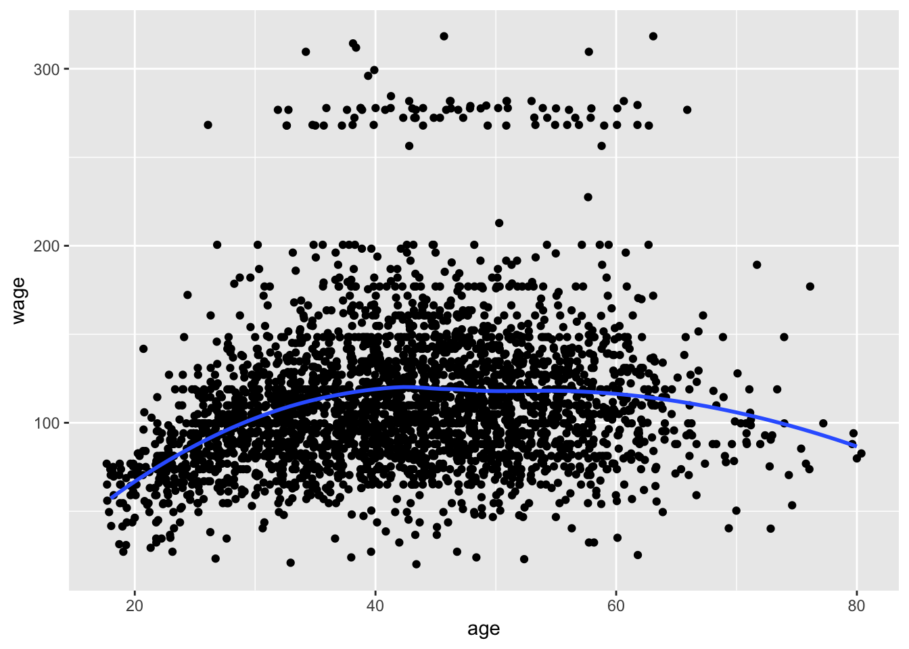
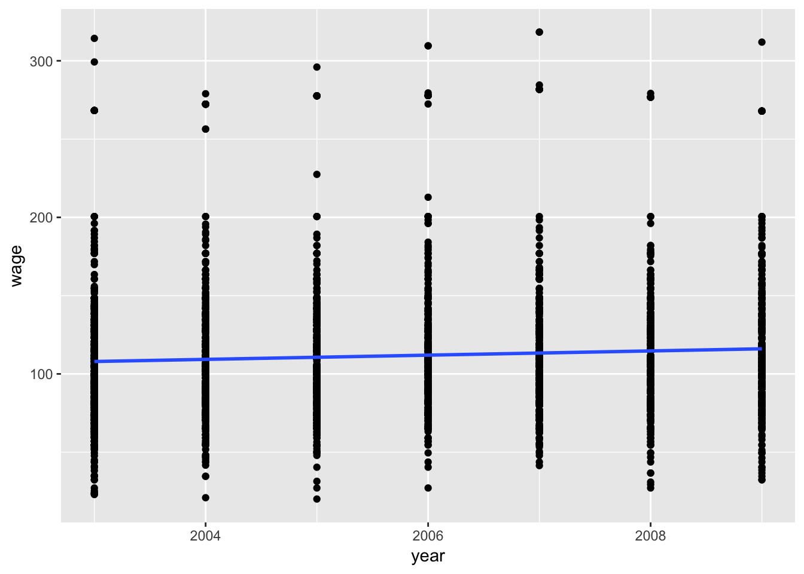

last updated on 2018-05-16
library(tidyverse)## ── [1mAttaching packages[22m ───────────────────────────────────────────────────────────────────── tidyverse 1.2.1.[31m9000[39m ──## [32m✔[39m [34mggplot2[39m 2.2.1.[31m9000[39m [32m✔[39m [34mpurrr [39m 0.2.4
## [32m✔[39m [34mtibble [39m 1.4.2 [32m✔[39m [34mdplyr [39m 0.7.4
## [32m✔[39m [34mtidyr [39m 0.8.0 [32m✔[39m [34mstringr[39m 1.3.1
## [32m✔[39m [34mreadr [39m 1.1.1 [32m✔[39m [34mforcats[39m 0.3.0## ── [1mConflicts[22m ───────────────────────────────────────────────────────────────────────────── tidyverse_conflicts() ──
## [31m✖[39m [34mdplyr[39m::[32mfilter()[39m masks [34mstats[39m::filter()
## [31m✖[39m [34mdplyr[39m::[32mlag()[39m masks [34mstats[39m::lag()
## [31m✖[39m [34mdplyr[39m::[32mvars()[39m masks [34mggplot2[39m::vars()Statistical Learning = tools for understanding data
These tools are classified into two buckets:
Supervised: a model used for predicting, or estimating an output based on one or more inputs Unsupervised: there are inputs but no supervising output; useful for learning relationships and structure from data
The two classic examples of supervised and unsupervised statistical learning problems are:
Using regression to predict an employee’s wage given other variables, e.g., age, education, or year. In this case we are predicting a continuous or quantitative variable.
wage <- ISLR::Wage %>% janitor::clean_names()wage %>% glimpse()## Observations: 3,000
## Variables: 11
## $ year <int> 2006, 2004, 2003, 2003, 2005, 2008, 2009, 2008, 200...
## $ age <int> 18, 24, 45, 43, 50, 54, 44, 30, 41, 52, 45, 34, 35,...
## $ maritl <fct> 1. Never Married, 1. Never Married, 2. Married, 2. ...
## $ race <fct> 1. White, 1. White, 1. White, 3. Asian, 1. White, 1...
## $ education <fct> 1. < HS Grad, 4. College Grad, 3. Some College, 4. ...
## $ region <fct> 2. Middle Atlantic, 2. Middle Atlantic, 2. Middle A...
## $ jobclass <fct> 1. Industrial, 2. Information, 1. Industrial, 2. In...
## $ health <fct> 1. <=Good, 2. >=Very Good, 1. <=Good, 2. >=Very Goo...
## $ health_ins <fct> 2. No, 2. No, 1. Yes, 1. Yes, 1. Yes, 1. Yes, 1. Ye...
## $ logwage <dbl> 4.318063, 4.255273, 4.875061, 5.041393, 4.318063, 4...
## $ wage <dbl> 75.04315, 70.47602, 130.98218, 154.68529, 75.04315,...Figure 1.1
wage %>%
ggplot(aes(x = age, y = wage)) +
geom_jitter() +
geom_smooth(method = "loess", se = F)
wage %>%
ggplot(aes(x = year, y = wage)) +
geom_point() +
geom_smooth(method = "lm", se = F)
wage %>%
ggplot(aes(x = education, y = wage, fill = education)) +
geom_boxplot(show.legend = F)In this unsupervised example we want to predict a categorical or qualitative output. In this case, we want to know whether or not we can predict moving in the stock market that is categorized into either an ‘up’ bucket or a ‘down’ bucket. This is known as a classification problem. In this case we have both an input and an output variable.
stocks <- ISLR::Smarket %>% janitor::clean_names()stocks %>% glimpse()## Observations: 1,250
## Variables: 9
## $ year <dbl> 2001, 2001, 2001, 2001, 2001, 2001, 2001, 2001, 2001...
## $ lag1 <dbl> 0.381, 0.959, 1.032, -0.623, 0.614, 0.213, 1.392, -0...
## $ lag2 <dbl> -0.192, 0.381, 0.959, 1.032, -0.623, 0.614, 0.213, 1...
## $ lag3 <dbl> -2.624, -0.192, 0.381, 0.959, 1.032, -0.623, 0.614, ...
## $ lag4 <dbl> -1.055, -2.624, -0.192, 0.381, 0.959, 1.032, -0.623,...
## $ lag5 <dbl> 5.010, -1.055, -2.624, -0.192, 0.381, 0.959, 1.032, ...
## $ volume <dbl> 1.1913, 1.2965, 1.4112, 1.2760, 1.2057, 1.3491, 1.44...
## $ today <dbl> 0.959, 1.032, -0.623, 0.614, 0.213, 1.392, -0.403, 0...
## $ direction <fct> Up, Up, Down, Up, Up, Up, Down, Up, Up, Up, Down, Do...What about situations where we only observe input variables? Say we are marketers and we want to better understand our customers by breaking them into separate segments that represent a kind of persona–this is an example of a clustering problem.
nci60 <- ISLR::NCI60str(nci60)## List of 2
## $ data: num [1:64, 1:6830] 0.3 0.68 0.94 0.28 0.485 ...
## ..- attr(*, "dimnames")=List of 2
## .. ..$ : chr [1:64] "V1" "V2" "V3" "V4" ...
## .. ..$ : chr [1:6830] "1" "2" "3" "4" ...
## $ labs: chr [1:64] "CNS" "CNS" "CNS" "RENAL" ...This looks like a weird nested list–not sure how to convert to tibble or if I need to.
((80 * 24) + 250) - 1850## [1] 320Concepts that underlie statistical learning (fairly new term)
| Math | Meaning |
|---|---|
| \(n\) | number of distinct data points or observations in a sample |
| \(p\) | the number of variables that are available for use in making predictions |
| \(x_{ij}\) | the value of the \(j\)th variable for the \(i\)th observation, e.g., \(i=1,2,\ldots,n\) and \(j=1,2,\ldots,p\) |
| \(i\) | index the samples or observations (from 1 to \(n\)) |
| \(j\) | index the variables (from 1 to \(p\)) |
| \(\mathbf{X}\) | a \(n \times p\) matrix whose \((i,j)\)th element is \(x_{ij}\) |
| \(^{T}\) | the transpose of a matrix or vector |
| \(y_{i}\) | the \(i\)th observation of the variable on which we wish to make our predictions |
| \(\mathbf{a}\) | a vector of length \(n\) (always denoted in lower case bold) |
| \(a\) | a vector not of length \(n\) (such as feature vectors) as will scalars |
| \(\mathbf{A}\) | Matrices (bold capital) |
| \(A\) | Random variables |
| \(a \in \mathbb{R}\) | the dimention of a particular object (\(a\)) |
| \(a \in \mathbb{R}^{k}\) | indicate it is a vector of length \(k\) |
| \(\mathbf{a} \in \mathbb{R}^{n}\) | if it is of length \(n\) |
| \(\mathbf{A} \in \mathbb{R}^{r \times s}\) | Object is a \(r \times s\) matrix |
We let \(\mathbf{X}\) denote a \(n \times p\) matrix whose \((i,j)\)th element is \(x_{ij}\)
\[ \mathbf{X}=\left\{ \begin{matrix} x_{11} & x_{12} & \cdots & x_{1p} \\ x_{21} & x_{22} & \cdots & x_{2p} \\ \vdots & \vdots & \ddots & \vdots \\ x_{n1} & x_{n2} & \cdots & x_{np} \end{matrix}\right\} \]
It is useful to visualize \(\mathbf{X}\) as a data frame of numbers with \(n\) rows and \(p\) columns. We are usually interested in the rows of \(\mathbf{X}\), which we write as \(x_{1}, x_{2}, \ldots , x_{n}\).
Here \(x_{i}\) is a vector of length \(p\), containing the \(p\) variable measurements for the \(i\)th observation
\[ x_{i}=\left\{ \begin{matrix} x_{i1} \\ x_{i2} \\ \vdots \\ x_{ip} \\ \end{matrix}\right\} \]
Vectors by default are represented as columns.
An example from the wage data: \(x_{i}\) is a vector of length 12, consisting of year, age, wage, and other values for the \(i\)th individual. For the columns of \(\mathbf{X}\) we write \(\mathbf{x}_{1}, \mathbf{x}_{2}, \ldots , \mathbf{x}_{p}\) each is a vector of length \(n\), e.g.:
\[ \mathbf{x}_j=\left\{ \begin{matrix} x_{1j} \\ x_{2j} \\ \vdots \\ x_{nj} \end{matrix}\right\} \]
The wage data, \(\mathbf(x)_1\) contains the \(n=3000\) values for year, which can be written in two ways:
First \[ \mathbf{X}=(\mathbf{x}_{1} \ \mathbf{x}_{2} \cdots \mathbf{x}_{p}) \]
Second
\[ \mathbf{X}=\left\{ \begin{matrix} x^{T}_{1} \\ x^{T}_{2} \\ \vdots \\ x^{T}_{n} \end{matrix}\right\} \]
Suppose \(\mathbf{A}\in\mathbb{R}^{r \times d}\) and \(\mathbf{B}\in\mathbb{R}^{d \times s}\). The product of \(\mathbf{A}\) and \(\mathbf{B}\) is denoted \(\mathbf{AB}\). The \((ij)\)th element of \(\mathbf{AB}\) is computed by multiplying each element of the \(i\)th row of \(\mathbf{A}\) by the corresponding element of the \(j\)th column of \(\mathbf{B}\)
$$ ={ \[\begin{matrix} 1 & 2 \\ 3 & 4 \end{matrix}\]}
 and Â
={ \[\begin{matrix} 5 & 6 \\ 7 & 8 \end{matrix}\]} $$
Then:
\[ \mathbf{AB}=\left\{ \begin{matrix} 1 & 2 \\ 3 & 4 \end{matrix}\right\} \left\{\begin{matrix} 5 & 6 \\ 7 & 8 \end{matrix}\right\} = \left\{\begin{matrix} 1 \times 5 \ + 2 \times 8 & 1 \times 6 \ + 2 \times 8 \\ 3 \times 5 \ + 4 \times 7 & 3 \times 6 \ + 4 \times 8 \end{matrix}\right\}= \left\{\begin{matrix} 19 & 22 \\ 43 & 50 \end{matrix}\right\} \]
This produces an \(r \times s\) matrix. It is only possible to compute \(\mathbf{AB}\) if the number of columns of \(\mathbf{A}\) are the same length as the number of rows of \(\mathbf{B}\)